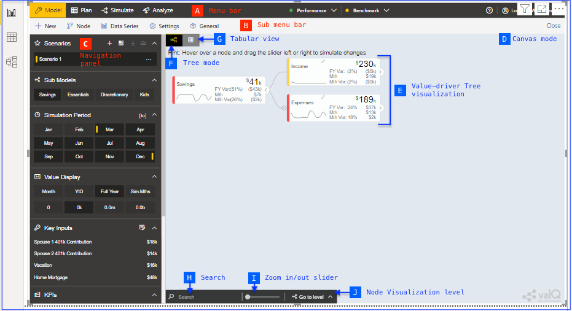

Overview

Quote
Model, Analyze and forecast your key business metrics
ValQ is a serverless, lightweight, multi-purpose application running on Power BI supporting use cases such as planning, forecasting, budgeting, time series forecasting, and value driver planning.
Key Features
- Simulate on-the-fly and forecast key outcomes visually and instantly.
- Create Multiple Scenarios, compare, save & download
- Analyze variance
- Configure. Don't code
- ValQ runs on a Serverless architecture and provides Function As A Service (FaaS)
- ValQ connects to all data sources - Databases, Platforms/Apps, and many more.
- ValQ fits well for all functions - Finance, Sales & Marketing, Operations, Procurement, & Human Resources.
Getting Started
System Requirements
-
Windows 10, Windows Server 2012 R2, Windows Server 2008 R2, Windows Server 2012, Windows 7, Windows 8, Windows 8.1
-
Microsoft Power BI Desktop requires Internet Explorer 10 or greater.
-
Microsoft Power BI Desktop is available for 32-bit (x86) and 64-bit (x64) platforms.
-
Download MS Power BI Desktop
Download
-
Supported version: Power BI 2.69.5467.1251* onwards
-
Download valQ application
First Steps
Get a 10-minute overview of ValQ to quickly get started with setting up the environment.
-
Open Microsoft Power BI Desktop application
-
Click on valQ visuals in the Visualisations panel on the right
-
A welcome valQ image appears in Canvas, resize the image to fit the screen
User Interface
